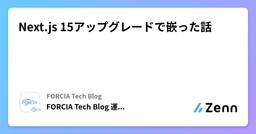

FORCIA Tech Blogのフィード
https://zenn.dev/p/forcia_tech
――「つなげれば、見える。」――膨大・複雑なデータから必要な情報を的確に探し出す検索テクノロジーを基にしたシステム開発・サービス提供並びに、コンサルティングで企業のDXを推進するフォルシア株式会社テックブログです。 エンジニア積極募集中！！
フィード

Next.js 15アップグレードで嵌った話
FORCIA Tech Blogのフィード
まえがきエンジニアの恒川です。2024年10月に Next.js 15 安定版がリリースされました。キャッシュ戦略に大きな変更があったり、 Turbopack のstableが使えるようになったりなど気になる変更内容がたくさんありました。私が所属するチームでは Next.js 14 を使ったアプリケーション開発をしていましたが、今回の Next.js 15 リリースを受けてバージョンアップを行いました。14 → 15へのアップグレードだったためサクッといけるだろうと思っていたのですが、いくつかハマりポイントがあり、完全にすべては解消できていないものの現在では Next.js ...
7日前

Apacheの拡張モジュール「mod_qos」でアクセスが殺到しても落ちないwebサイトを作る
FORCIA Tech Blogのフィード
はじめにインターネット上でwebサイトを運用している方であれば、自身の管理するwebサイトに突然アクセスが殺到しwebサイトが高負荷になってヒヤヒヤしたり、実際にダウンさせてしまったという経験があるかもしれません。アクセス数の見積もりやサーバのサイジングを慎重に行っていたとしても、インターネット上にサーバを公開している以上はアクセスが突如としてスパイクし想定以上の高負荷状態になってしまうことはあり得るかと思います。アクセス急増時にwebサイトをダウンさせないようにするには、一般的に以下のような方法が考えられるかと思います。 オートスケールする高負荷となったらオートスケール...
21日前
Neovim で VS Code みたいにコーディングする
FORCIA Tech Blogのフィード
はじめまして、新卒1年目エンジニアの出口です。私は以前 Visual Studio Code (VS Code) を使ってプログラムを書いていました。VS Code はインストールしたらすぐに様々な言語でコーディングを始めることができ、便利です。ただ、VS Code の統合ターミナル上のシェルと、VS Code のキーボードショートカットが干渉してしまうことが多い点では不便だったため、Neovim に移行しました。https://neovim.io/移行してみてしばらく経ち、さほど不満は出てこなかったので、Neovim で開発することで感じたメリットと、VS Code から体験...
1ヶ月前
18リポジトリをnpmからpnpmに移行した際の学び
FORCIA Tech Blogのフィード
はじめにこんにちは、エンジニアの力石です。フォルシアでは商品販売プラットフォームwebコネクトを提供しており、私はその中の検索システム(検索領域)の開発・運用保守を行っています。検索領域はマイクロサービスアーキテクチャで構築されており、機能毎(コンポーネント毎)にリポジトリを分けるマルチリポジトリ構成を採用しています。そして最近、検索領域では npm を利用している全 18 リポジトリのパッケージマネージャーを pnpm へと移行しました。本記事では移行の際に躓いたエラーや今回の移行の反省点・今後に向けての改善点について紹介します。(移行手順についてはさまざまな記事が出て...
1ヶ月前
高速データ変換とトランザクション処理を両立するためのデータベース設計
FORCIA Tech Blogのフィード
まえがきフォルシアでは長年検索に特化したアプリケーションを開発してきましたが、近年注力しているプラットフォームのwebコネクトにおいては検索領域に留まらず商品販売に求められるあらゆる機能を提供しています。webコネクトにおいて、ほぼ全ての商材データを管理する領域が素材登録システム（造成領域）です。素材登録システムでは商品販売に必要な情報の登録、管理に加え、サイトコントローラーなどの外部システムとの商品連携や、検索領域、予約領域を始めとした外部システムへのデータ配信を担っています。そんなwebコネクトにおける「データの肝」である素材登録システムには、これまで我々が提供してきた検索...
2ヶ月前
Honoを使ってNext.jsにPOSTページを実装しよう！
FORCIA Tech Blogのフィード
こんにちは、エンジニアの籏野です。近年、弊社の作るWebアプリケーションはNext.jsを用いて開発されることが多いです。Next.jsは高パフォーマンスなWebページを作るための様々な機能を内包したReactフレームワークであり、メジャーバージョンアップの際には次々と新しい機能が追加されています。さて今回はとある事情により、POSTメソッドで描画されるページを実装したい要望が出てきたため、Next.jsでPOSTページを実現できるのか検証してみました。 結論HonoをRoute Handlersで利用することで、Next.jsでもPOSTページを実装することができました。...
2ヶ月前
【チートシート】psqlコマンドで全部やる
FORCIA Tech Blogのフィード
こんにちは、エンジニアの水野です。突然ですが、みなさんコマンドライン操作はお好きですか？私は特に、直感的かつ手軽にスクリプトを書いてタスクをこなせるようなコマンドが好きです。たとえばPostgreSQLを日常的に利用するDBプロフェッショナルは数多いるとはいえ、「psqlコマンドをフルに使いこなしているよ」という方は意外と少ないのではないでしょうか。ドキュメントを漁れば無限に機能が出てくるPostgreSQLですが、なかでもpsqlコマンドは書き捨てクエリの操作だけではなく、psql自身が実行するメタコマンドとして、直感的かつ非常に手広く活用できます！本記事では、psqlコ...
3ヶ月前
【2024年版】めっちゃ使いやすいPythonの開発環境をVSCode上で構築する方法
FORCIA Tech Blogのフィード
筆者はPythonのパッケージ管理ツールとしてpip、バージョン管理ツール（仮想環境）としてpyenv / virtualenvを利用していますが、要求されるパッケージのバージョンが衝突する、全体の環境が汚れていくなど色々不便さを感じています。このような悩みはPythonユーザーあるあるではないでしょうか？そこで今回は、2024年時点で非常に使いやすいと噂のRyeやその他ツールを改めて導入し、各ツールの利用方法や使い心地などを確認することにしました。 この記事によってできることPythonの新規プロジェクト立ち上げが容易に行えるパッケージ管理、バージョン管理、仮想環境管...
3ヶ月前
AWS Organizations と AWS Config を利用した複数アカウントのリソース監視
FORCIA Tech Blogのフィード
はじめにこんにちは、フォルシア SRE ユニットの高嶋です。本記事では、AWS Organizations と AWS Config を利用した複数アカウントのリソース監視についての一例をご紹介します。監視の実現にあたっては、 Config アグリゲータという複数アカウントの AWS Config 設定や評価情報を集約してくれる機能を利用しています。大変便利な機能なのですが、集約した情報を利用して通知をするなど発展的な利用法に関する情報が少なく苦労したため、似たようなことを実現したい方の助けとなることを期待してこの記事を執筆をします。AWS Organizations とはh...
4ヶ月前
非コンテナ環境でもOK！AnsibleとAnsistranoで簡単サーバーデプロイ
FORCIA Tech Blogのフィード
こんにちは、エンジニアの瑠東です。エンジニアは誰しもデプロイに困ったことが一度はあるのではないでしょうか。OSやミドルウェアのバージョンアップデート・インストールをしたいが、自動で全て行う方法はないかローカルに環境構築を行いたいが、npmコマンドなどをひとつひとつ叩かないといけない追加・修正したコードをサーバーに反映したいが、手動でsymlinkを張りなおさないといけない誰かがサーバーに一時ファイルを大量につくりディスク容量を圧迫しているため、デプロイ時に消すことはできないか今回は、そんなデプロイ時に困っていることをすべて自動化してくれる技術を紹介する記事です。 フォ...
4ヶ月前
monorepo × vitestでプロジェクト全体のカバレッジを計測する
FORCIA Tech Blogのフィード
こんにちは、エンジニアの籏野です。アプリケーション開発において、テストを書くということは非常に重要です。テストを書く際の一つの指標としてカバレッジを計測することがあると思います。弊社でもカバレッジの計測を行っているのですが、モノレポ構成のプロジェクトでプロジェクト全体のカバレッジを計測したいという要望がありました。プロジェクト内に存在する複数のパッケージ/アプリケーションそれぞれでのテスト実行・カバレッジ計測はできていたのですが、プロジェクト全体のカバレッジ計測は行ったことがなかったので今回調べました。テストランナーにはvitestを使用しており、vitestのWorkspac...
5ヶ月前
PostgreSQLだけでElasticsearchのようなキーワード検索！ParadeDB触ってみた
FORCIA Tech Blogのフィード
はじめにこんにちは、エンジニアの長谷です。最近社内でPostgreSQL拡張をRustで実装しているのですが、世の中でもRust製のPostgreSQL拡張がいろいろと開発されているようです。今日はその中の1つParadeDBをご紹介します。 ParadeDBとはParadeDBとはElasticsearchのような機能を持つPostgreSQL拡張で、Rustで実装されています。似たような拡張としてはZomboDBがありますが、こちらはあくまでElasticsearchの導入が前提でPostgreSQLとElasticsearchを連携するような機能であるのに対し、P...
5ヶ月前
できるだけターミナルを使わないVisual Studio Codeでの開発
FORCIA Tech Blogのフィード
この記事は、Visual Studio Code（以下「VS Code」といいます）でできるだけターミナルを使わないで開発する方法を紹介する記事です。 ターミナルを使わない理由VS Codeはターミナルを内蔵しており、VS Codeを離れることなくコマンドを使って作業できることが便利とされていますが、初学者の方はコマンドを覚えていなかったり、ターミナルでの作業に慣れていなかったりすると思います。ですので、この記事ではVS Codeを使って便利に作業する方法をご紹介します。実際の開発の流れに沿って紹介します。 できるだけターミナルを使わないVS Codeでの開発方法 Gitの...
6ヶ月前
出ない順 PostgreSQLの実行計画
FORCIA Tech Blogのフィード
まえがきエンジニアの吉田です。このブログのタイトルを見て記事をご覧になった方は言うまでもなく常日頃よりexplainコマンドの結果とにらめっこする生活を送っていることと推察しますが、PostgreSQL(以下postgres)の実行計画について「完全に理解した」と言える人は果たしてどれくらいいるでしょうか。かくいう私も「ここでSeq Scanが走っているんだな」「ここはNested Loop Joinになっているんだな」「ここはパラレルに実行されているんだな」程度の極めて浅い見方しかできていない、というのが実情になります。本稿はそんな我々の実行計画に対する理解を深めるべくpo...
6ヶ月前
その関数ほんとに全部わかってますか? ~Effectの実例を添えて~
FORCIA Tech Blogのフィード
こんにちは、エンジニアの籏野です。最近、弊社エンジニアが社内向けに書いた記事で「ある関数を実行したときに捕捉すべきエラーをどのように知ればよいか？」という問いを投げていました。この問いに対する回答として、いわゆるResult型の利用を提案してくれていたのですが、これが個人的にとても興味深いものでした。私自身最近はRustを触っていることもあり、なんとなくResult型の存在は認識していたのですが、どのようなメリットがあるのかといったことについてはあまり理解していませんでした。そんな中で、「関数を実行したときに捕捉すべきエラー」を型を通じて可視化するというアプローチは大変学びになり...
7ヶ月前
OpenAPI定義を用いて型安全にFormDataを扱いたい！
FORCIA Tech Blogのフィード
こんにちは、エンジニアの籏野です。フォルシアの API 開発では OpenAPI 定義を利用し、TypeScript の型定義や各種ソースコードを自動で生成していることがあります。最近は型の生成にopenapi-typescript、フロントエンドで利用する API クライアントにopenapi-fetchを利用する機会が増えてきました。openapi-fetch を利用する場合、クエリ/パスパラメータ―や JSON.stringify できるようなボディパラメーターについては特に気にすることなく利用が可能なのですが、ファイルのアップロードを行う場合にどのようにすればよいかがわから...
7ヶ月前
「あの写真どこいった？」を画像認識で解決してみる
FORCIA Tech Blogのフィード
はじめにはじめまして、こんにちは。フォルシアの基盤技術部でエンジニアをしている太田と申します。突然ですが、みなさまはスマホ、デジカメ等々で写真を撮ることは多いでしょうか？写真をよく撮られる方にあるあるのお悩みの一つに「あの写真どこ？」となることがあるかと思います。今回はそんなお悩みが解決するような「文章による画像検索機能」を作成してみました。 キーワード画像検索機能について今回の機能を作成するにあたって、基本機能やいくつかの要件を設けました。機能概要ブラウザ上で入力された検索キーワードの内容に対し、感覚的に「近い」画像を表示する機能。単語ではなく「○○の×...
8ヶ月前
Node.jsによるCLI開発のススメ ～watchモードを添えて～
FORCIA Tech Blogのフィード
こんにちは、エンジニアの籏野です。近年のフォルシアのアプリ開発は Node.js を中心としたエコシステムの恩恵を多く受けながら行われています。モジュールとしてアプリで利用するだけでなく、便利な CLI などもたくさん存在しており、ちょっとした困りごとが簡単に解決できる場面も多いです。今回は開発を進める中で CLI を自作しようかなと思う場面があり、基本的な CLI の作り方について調べました。よく見る「watch モード」も搭載してみましたので紹介します。 利用するモジュール今回は以下の 3 つのモジュールを利用しました。※ TypeScript を利用していますので、...
9ヶ月前
調査時大活躍！テキスト処理シェルワンライナー
FORCIA Tech Blogのフィード
こんにちは、エンジニアの水野です。普段我々エンジニアが用いるOSには様々な種類があります。フォルシアでは主に、Windows標準のLinux環境であるWSLや、VirtualBoxのUbuntuを用いて開発しています。Linuxの操作には様々なコマンドを駆使しますが、頻繁に使うもの以外は忘れてしまったり、応用方法が狭まってしまうのもまた事実。フォルシアの現役エンジニア社員はどのようなコマンドを駆使しているのでしょうか？今回は頻出のコマンドから、それらを組み合わせ調査時に大活躍する「FORCIA的便利なワンライナー」までを簡単に紹介します。 業務で頻出！基本コマンドいろいろ...
1年前
GitLab CIでMR毎にプレビュー環境を作ろう！
FORCIA Tech Blogのフィード
概要フォルシアではアプリのリポジトリ管理のために、社内に GitLab のインスタンスを立てて運用しており、開発は GitLab の MR(Merge Request) の作成 → チームメンバーからのレビューというサイクルで行われています。レビューの際、特に見た目の変更を伴う修正が入る場合には自分のローカル開発環境に開発ブランチを持ってきてアプリを立ち上げる必要が出てきます。レビュー対象が増えてくると、ブランチを切り替えていくのもなかなか大変なので、もう少し簡単にレビューができないだろうかということで試してみました。 方針タイトルの通りですが、以下のような方針とします。...
1年前